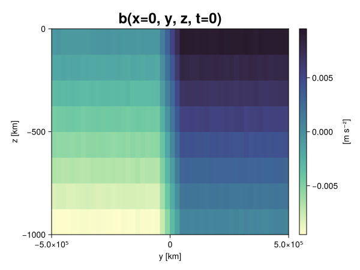
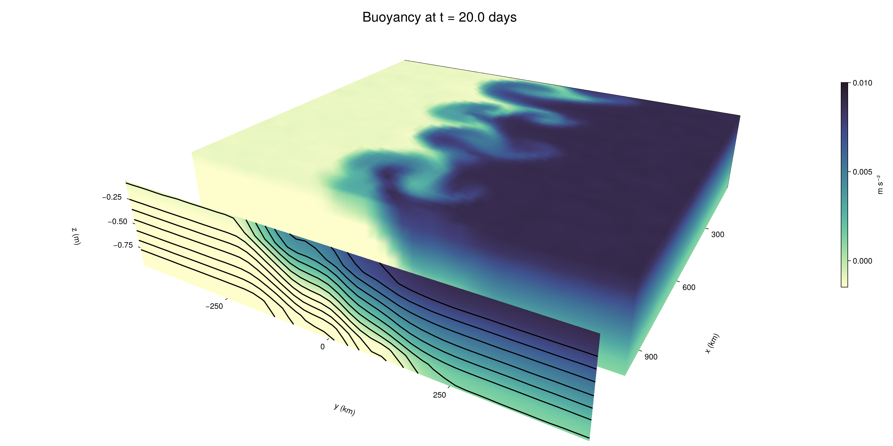

Baroclinic adjustment
In this example, we simulate the evolution and equilibration of a baroclinically unstable front.
Install dependencies
First let's make sure we have all required packages installed.
using Pkg
pkg"add Oceananigans, CairoMakie"using Oceananigans
using Oceananigans.UnitsGrid
We use a three-dimensional channel that is periodic in the x direction:
Lx = 1000kilometers # east-west extent [m]
Ly = 1000kilometers # north-south extent [m]
Lz = 1kilometers # depth [m]
grid = RectilinearGrid(size = (48, 48, 8),
x = (0, Lx),
y = (-Ly/2, Ly/2),
z = (-Lz, 0),
topology = (Periodic, Bounded, Bounded))48×48×8 RectilinearGrid{Float64, Periodic, Bounded, Bounded} on CPU with 3×3×3 halo
├── Periodic x ∈ [0.0, 1.0e6) regularly spaced with Δx=20833.3
├── Bounded y ∈ [-500000.0, 500000.0] regularly spaced with Δy=20833.3
└── Bounded z ∈ [-1000.0, 0.0] regularly spaced with Δz=125.0Model
We built a HydrostaticFreeSurfaceModel with an ImplicitFreeSurface solver. Regarding Coriolis, we use a beta-plane centered at 45° South.
model = HydrostaticFreeSurfaceModel(; grid,
coriolis = BetaPlane(latitude = -45),
buoyancy = BuoyancyTracer(),
tracers = :b,
momentum_advection = WENO(),
tracer_advection = WENO())HydrostaticFreeSurfaceModel{CPU, RectilinearGrid}(time = 0 seconds, iteration = 0)
├── grid: 48×48×8 RectilinearGrid{Float64, Periodic, Bounded, Bounded} on CPU with 3×3×3 halo
├── timestepper: QuasiAdamsBashforth2TimeStepper
├── tracers: b
├── closure: Nothing
├── buoyancy: BuoyancyTracer with ĝ = NegativeZDirection()
├── free surface: ImplicitFreeSurface with gravitational acceleration 9.80665 m s⁻²
│ └── solver: FFTImplicitFreeSurfaceSolver
├── advection scheme:
│ ├── momentum: WENO reconstruction order 5
│ └── b: WENO reconstruction order 5
└── coriolis: BetaPlane{Float64}We start our simulation from rest with a baroclinically unstable buoyancy distribution. We use ramp(y, Δy), defined below, to specify a front with width Δy and horizontal buoyancy gradient M². We impose the front on top of a vertical buoyancy gradient N² and a bit of noise.
"""
ramp(y, Δy)
Linear ramp from 0 to 1 between -Δy/2 and +Δy/2.
For example:
```
y < -Δy/2 => ramp = 0
-Δy/2 < y < -Δy/2 => ramp = y / Δy
y > Δy/2 => ramp = 1
```
"""
ramp(y, Δy) = min(max(0, y/Δy + 1/2), 1)
N² = 1e-5 # [s⁻²] buoyancy frequency / stratification
M² = 1e-7 # [s⁻²] horizontal buoyancy gradient
Δy = 100kilometers # width of the region of the front
Δb = Δy * M² # buoyancy jump associated with the front
ϵb = 1e-2 * Δb # noise amplitude
bᵢ(x, y, z) = N² * z + Δb * ramp(y, Δy) + ϵb * randn()
set!(model, b=bᵢ)Let's visualize the initial buoyancy distribution.
using CairoMakie
# Build coordinates with units of kilometers
x, y, z = 1e-3 .* nodes(grid, (Center(), Center(), Center()))
b = model.tracers.b
fig, ax, hm = heatmap(view(b, 1, :, :),
colormap = :deep,
axis = (xlabel = "y [km]",
ylabel = "z [km]",
title = "b(x=0, y, z, t=0)",
titlesize = 24))
Colorbar(fig[1, 2], hm, label = "[m s⁻²]")
fig
Simulation
Now let's build a Simulation.
simulation = Simulation(model, Δt=20minutes, stop_time=20days)Simulation of HydrostaticFreeSurfaceModel{CPU, RectilinearGrid}(time = 0 seconds, iteration = 0)
├── Next time step: 20 minutes
├── Elapsed wall time: 0 seconds
├── Wall time per iteration: NaN days
├── Stop time: 20 days
├── Stop iteration : Inf
├── Wall time limit: Inf
├── Callbacks: OrderedDict with 4 entries:
│ ├── stop_time_exceeded => Callback of stop_time_exceeded on IterationInterval(1)
│ ├── stop_iteration_exceeded => Callback of stop_iteration_exceeded on IterationInterval(1)
│ ├── wall_time_limit_exceeded => Callback of wall_time_limit_exceeded on IterationInterval(1)
│ └── nan_checker => Callback of NaNChecker for u on IterationInterval(100)
├── Output writers: OrderedDict with no entries
└── Diagnostics: OrderedDict with no entriesWe add a TimeStepWizard callback to adapt the simulation's time-step,
conjure_time_step_wizard!(simulation, IterationInterval(20), cfl=0.2, max_Δt=20minutes)Also, we add a callback to print a message about how the simulation is going,
using Printf
wall_clock = Ref(time_ns())
function print_progress(sim)
u, v, w = model.velocities
progress = 100 * (time(sim) / sim.stop_time)
elapsed = (time_ns() - wall_clock[]) / 1e9
@printf("[%05.2f%%] i: %d, t: %s, wall time: %s, max(u): (%6.3e, %6.3e, %6.3e) m/s, next Δt: %s\n",
progress, iteration(sim), prettytime(sim), prettytime(elapsed),
maximum(abs, u), maximum(abs, v), maximum(abs, w), prettytime(sim.Δt))
wall_clock[] = time_ns()
return nothing
end
add_callback!(simulation, print_progress, IterationInterval(100))Diagnostics/Output
Here, we save the buoyancy, $b$, at the edges of our domain as well as the zonal ($x$) average of buoyancy.
u, v, w = model.velocities
ζ = ∂x(v) - ∂y(u)
B = Average(b, dims=1)
U = Average(u, dims=1)
V = Average(v, dims=1)
filename = "baroclinic_adjustment"
save_fields_interval = 0.5day
slicers = (east = (grid.Nx, :, :),
north = (:, grid.Ny, :),
bottom = (:, :, 1),
top = (:, :, grid.Nz))
for side in keys(slicers)
indices = slicers[side]
simulation.output_writers[side] = JLD2OutputWriter(model, (; b, ζ);
filename = filename * "_$(side)_slice",
schedule = TimeInterval(save_fields_interval),
overwrite_existing = true,
indices)
end
simulation.output_writers[:zonal] = JLD2OutputWriter(model, (; b=B, u=U, v=V);
filename = filename * "_zonal_average",
schedule = TimeInterval(save_fields_interval),
overwrite_existing = true)JLD2OutputWriter scheduled on TimeInterval(12 hours):
├── filepath: ./baroclinic_adjustment_zonal_average.jld2
├── 3 outputs: (b, u, v)
├── array type: Array{Float64}
├── including: [:grid, :coriolis, :buoyancy, :closure]
├── file_splitting: NoFileSplitting
└── file size: 30.7 KiBNow we're ready to run.
@info "Running the simulation..."
run!(simulation)
@info "Simulation completed in " * prettytime(simulation.run_wall_time)[ Info: Running the simulation...
[ Info: Initializing simulation...
[00.00%] i: 0, t: 0 seconds, wall time: 23.071 seconds, max(u): (0.000e+00, 0.000e+00, 0.000e+00) m/s, next Δt: 20 minutes
[ Info: ... simulation initialization complete (25.655 seconds)
[ Info: Executing initial time step...
[ Info: ... initial time step complete (20.123 seconds).
[06.94%] i: 100, t: 1.389 days, wall time: 36.071 seconds, max(u): (1.299e-01, 1.225e-01, 1.588e-03) m/s, next Δt: 20 minutes
[13.89%] i: 200, t: 2.778 days, wall time: 1.018 seconds, max(u): (2.275e-01, 1.803e-01, 1.948e-03) m/s, next Δt: 20 minutes
[20.83%] i: 300, t: 4.167 days, wall time: 1.095 seconds, max(u): (3.040e-01, 2.316e-01, 1.830e-03) m/s, next Δt: 20 minutes
[27.78%] i: 400, t: 5.556 days, wall time: 1.100 seconds, max(u): (3.682e-01, 3.660e-01, 1.764e-03) m/s, next Δt: 20 minutes
[34.72%] i: 500, t: 6.944 days, wall time: 1.068 seconds, max(u): (4.880e-01, 5.818e-01, 1.960e-03) m/s, next Δt: 20 minutes
[41.67%] i: 600, t: 8.333 days, wall time: 1.066 seconds, max(u): (6.352e-01, 9.422e-01, 3.245e-03) m/s, next Δt: 20 minutes
[48.61%] i: 700, t: 9.722 days, wall time: 1.054 seconds, max(u): (9.496e-01, 1.213e+00, 4.145e-03) m/s, next Δt: 20 minutes
[55.56%] i: 800, t: 11.111 days, wall time: 1.026 seconds, max(u): (1.278e+00, 1.152e+00, 3.976e-03) m/s, next Δt: 20 minutes
[62.50%] i: 900, t: 12.500 days, wall time: 1.024 seconds, max(u): (1.354e+00, 1.094e+00, 4.676e-03) m/s, next Δt: 20 minutes
[69.44%] i: 1000, t: 13.889 days, wall time: 1.150 seconds, max(u): (1.288e+00, 1.058e+00, 4.358e-03) m/s, next Δt: 20 minutes
[76.39%] i: 1100, t: 15.278 days, wall time: 1.035 seconds, max(u): (1.201e+00, 1.005e+00, 3.347e-03) m/s, next Δt: 20 minutes
[83.33%] i: 1200, t: 16.667 days, wall time: 999.275 ms, max(u): (1.165e+00, 1.211e+00, 3.671e-03) m/s, next Δt: 20 minutes
[90.28%] i: 1300, t: 18.056 days, wall time: 1.053 seconds, max(u): (1.181e+00, 1.219e+00, 3.426e-03) m/s, next Δt: 20 minutes
[97.22%] i: 1400, t: 19.444 days, wall time: 1.010 seconds, max(u): (1.523e+00, 1.227e+00, 3.706e-03) m/s, next Δt: 20 minutes
[ Info: Simulation is stopping after running for 1.068 minutes.
[ Info: Simulation time 20 days equals or exceeds stop time 20 days.
[ Info: Simulation completed in 1.068 minutes
Visualization
All that's left is to make a pretty movie. Actually, we make two visualizations here. First, we illustrate how to make a 3D visualization with Makie's Axis3 and Makie.surface. Then we make a movie in 2D. We use CairoMakie in this example, but note that using GLMakie is more convenient on a system with OpenGL, as figures will be displayed on the screen.
using CairoMakieThree-dimensional visualization
We load the saved buoyancy output on the top, north, and east surface as FieldTimeSerieses.
filename = "baroclinic_adjustment"
sides = keys(slicers)
slice_filenames = NamedTuple(side => filename * "_$(side)_slice.jld2" for side in sides)
b_timeserieses = (east = FieldTimeSeries(slice_filenames.east, "b"),
north = FieldTimeSeries(slice_filenames.north, "b"),
top = FieldTimeSeries(slice_filenames.top, "b"))
B_timeseries = FieldTimeSeries(filename * "_zonal_average.jld2", "b")
times = B_timeseries.times
grid = B_timeseries.grid48×48×8 RectilinearGrid{Float64, Periodic, Bounded, Bounded} on CPU with 3×3×3 halo
├── Periodic x ∈ [0.0, 1.0e6) regularly spaced with Δx=20833.3
├── Bounded y ∈ [-500000.0, 500000.0] regularly spaced with Δy=20833.3
└── Bounded z ∈ [-1000.0, 0.0] regularly spaced with Δz=125.0We build the coordinates. We rescale horizontal coordinates to kilometers.
xb, yb, zb = nodes(b_timeserieses.east)
xb = xb ./ 1e3 # convert m -> km
yb = yb ./ 1e3 # convert m -> km
Nx, Ny, Nz = size(grid)
x_xz = repeat(x, 1, Nz)
y_xz_north = y[end] * ones(Nx, Nz)
z_xz = repeat(reshape(z, 1, Nz), Nx, 1)
x_yz_east = x[end] * ones(Ny, Nz)
y_yz = repeat(y, 1, Nz)
z_yz = repeat(reshape(z, 1, Nz), grid.Ny, 1)
x_xy = x
y_xy = y
z_xy_top = z[end] * ones(grid.Nx, grid.Ny)Then we create a 3D axis. We use zonal_slice_displacement to control where the plot of the instantaneous zonal average flow is located.
fig = Figure(size = (1600, 800))
zonal_slice_displacement = 1.2
ax = Axis3(fig[2, 1],
aspect=(1, 1, 1/5),
xlabel = "x (km)",
ylabel = "y (km)",
zlabel = "z (m)",
xlabeloffset = 100,
ylabeloffset = 100,
zlabeloffset = 100,
limits = ((x[1], zonal_slice_displacement * x[end]), (y[1], y[end]), (z[1], z[end])),
elevation = 0.45,
azimuth = 6.8,
xspinesvisible = false,
zgridvisible = false,
protrusions = 40,
perspectiveness = 0.7)Axis3()We use data from the final savepoint for the 3D plot. Note that this plot can easily be animated by using Makie's Observable. To dive into Observables, check out Makie.jl's Documentation.
n = length(times)41Now let's make a 3D plot of the buoyancy and in front of it we'll use the zonally-averaged output to plot the instantaneous zonal-average of the buoyancy.
b_slices = (east = interior(b_timeserieses.east[n], 1, :, :),
north = interior(b_timeserieses.north[n], :, 1, :),
top = interior(b_timeserieses.top[n], :, :, 1))
# Zonally-averaged buoyancy
B = interior(B_timeseries[n], 1, :, :)
clims = 1.1 .* extrema(b_timeserieses.top[n][:])
kwargs = (colorrange=clims, colormap=:deep, shading=NoShading)
surface!(ax, x_yz_east, y_yz, z_yz; color = b_slices.east, kwargs...)
surface!(ax, x_xz, y_xz_north, z_xz; color = b_slices.north, kwargs...)
surface!(ax, x_xy, y_xy, z_xy_top; color = b_slices.top, kwargs...)
sf = surface!(ax, zonal_slice_displacement .* x_yz_east, y_yz, z_yz; color = B, kwargs...)
contour!(ax, y, z, B; transformation = (:yz, zonal_slice_displacement * x[end]),
levels = 15, linewidth = 2, color = :black)
Colorbar(fig[2, 2], sf, label = "m s⁻²", height = Relative(0.4), tellheight=false)
title = "Buoyancy at t = " * string(round(times[n] / day, digits=1)) * " days"
fig[1, 1:2] = Label(fig, title; fontsize = 24, tellwidth = false, padding = (0, 0, -120, 0))
rowgap!(fig.layout, 1, Relative(-0.2))
colgap!(fig.layout, 1, Relative(-0.1))
save("baroclinic_adjustment_3d.png", fig)
Two-dimensional movie
We make a 2D movie that shows buoyancy $b$ and vertical vorticity $ζ$ at the surface, as well as the zonally-averaged zonal and meridional velocities $U$ and $V$ in the $(y, z)$ plane. First we load the FieldTimeSeries and extract the additional coordinates we'll need for plotting
ζ_timeseries = FieldTimeSeries(slice_filenames.top, "ζ")
U_timeseries = FieldTimeSeries(filename * "_zonal_average.jld2", "u")
B_timeseries = FieldTimeSeries(filename * "_zonal_average.jld2", "b")
V_timeseries = FieldTimeSeries(filename * "_zonal_average.jld2", "v")
xζ, yζ, zζ = nodes(ζ_timeseries)
yv = ynodes(V_timeseries)
xζ = xζ ./ 1e3 # convert m -> km
yζ = yζ ./ 1e3 # convert m -> km
yv = yv ./ 1e3 # convert m -> km49-element Vector{Float64}:
-500.0
-479.1666666666667
-458.3333333333333
-437.5
-416.6666666666667
-395.8333333333333
-375.0
-354.1666666666667
-333.3333333333333
-312.5
-291.6666666666667
-270.8333333333333
-250.0
-229.16666666666666
-208.33333333333334
-187.5
-166.66666666666666
-145.83333333333334
-125.0
-104.16666666666667
-83.33333333333333
-62.5
-41.666666666666664
-20.833333333333332
0.0
20.833333333333332
41.666666666666664
62.5
83.33333333333333
104.16666666666667
125.0
145.83333333333334
166.66666666666666
187.5
208.33333333333334
229.16666666666666
250.0
270.8333333333333
291.6666666666667
312.5
333.3333333333333
354.1666666666667
375.0
395.8333333333333
416.6666666666667
437.5
458.3333333333333
479.1666666666667
500.0Next, we set up a plot with 4 panels. The top panels are large and square, while the bottom panels get a reduced aspect ratio through rowsize!.
set_theme!(Theme(fontsize=24))
fig = Figure(size=(1800, 1000))
axb = Axis(fig[1, 2], xlabel="x (km)", ylabel="y (km)", aspect=1)
axζ = Axis(fig[1, 3], xlabel="x (km)", ylabel="y (km)", aspect=1, yaxisposition=:right)
axu = Axis(fig[2, 2], xlabel="y (km)", ylabel="z (m)")
axv = Axis(fig[2, 3], xlabel="y (km)", ylabel="z (m)", yaxisposition=:right)
rowsize!(fig.layout, 2, Relative(0.3))To prepare a plot for animation, we index the timeseries with an Observable,
n = Observable(1)
b_top = @lift interior(b_timeserieses.top[$n], :, :, 1)
ζ_top = @lift interior(ζ_timeseries[$n], :, :, 1)
U = @lift interior(U_timeseries[$n], 1, :, :)
V = @lift interior(V_timeseries[$n], 1, :, :)
B = @lift interior(B_timeseries[$n], 1, :, :)Observable([-0.009362453206716173 -0.008138488014788168 -0.006845189785214281 -0.005624949848010878 -0.004363712450661765 -0.003144961558420449 -0.0018690487593918392 -0.0006473821013001484; -0.009382646478273625 -0.008126128537437228 -0.006896301782495437 -0.005606253437117789 -0.0043926850484979135 -0.0031281911636265717 -0.0018604412755236401 -0.0006346444303658192; -0.009378877925185318 -0.008101283728642612 -0.006865835606382644 -0.005631733445513592 -0.004376186190284118 -0.003138465368797995 -0.0019049310153627218 -0.0006192134091454731; -0.009378044183526365 -0.008118547460809797 -0.0068834436009683605 -0.0056036878170437725 -0.004388565023778553 -0.0031210686393340487 -0.0018729365261422593 -0.0006263732808223799; -0.009398863357387904 -0.008111905428885909 -0.006885022751853413 -0.005621975297153082 -0.004371459506008558 -0.0031326128842832784 -0.0018842224398544947 -0.0006205960528761118; -0.00938265475046275 -0.008127937163302025 -0.006846241405265334 -0.005614223383175872 -0.004368792531889153 -0.0031360596584097205 -0.0018266160969054191 -0.0006132716094856327; -0.009377224148576101 -0.008120776418828713 -0.006868736327041277 -0.005629566589788154 -0.004378476198479608 -0.0031133074320184415 -0.001873568814330184 -0.0006188783015681006; -0.009354800789507881 -0.00812662922483807 -0.00685955143452702 -0.005650801655403374 -0.004348444426823218 -0.003115771829327378 -0.0019073545497579035 -0.0006275591605721592; -0.009401144004846583 -0.00813407630822128 -0.006884938586441035 -0.005643572593745501 -0.004372454495101352 -0.0031366355910579617 -0.0018586373427493816 -0.0006454116640853346; -0.009374235447127828 -0.00811717406859368 -0.00689289859528348 -0.0056241466321730145 -0.004381953098028954 -0.003120304808587842 -0.0018852926491281644 -0.0006367877021819817; -0.009375934596196756 -0.008120298475343131 -0.00686381369434106 -0.005619413830074196 -0.004365555140613776 -0.0031116923394322676 -0.001834891561622004 -0.0006191062023042634; -0.009379734752949176 -0.008148421890157511 -0.006904816844554708 -0.0056256267114228944 -0.004389725766047348 -0.003130265728581834 -0.0018873008014839033 -0.0006349986339225216; -0.009372266190448612 -0.008141968161709692 -0.006853702841501251 -0.005640441599568263 -0.004367682192431758 -0.003131156188871777 -0.0018659038733053798 -0.0006308912308329007; -0.009358569520375492 -0.008126747192920588 -0.006889117706961959 -0.005639649741586982 -0.0043581942932603085 -0.003117988385737977 -0.0018770319654453811 -0.0006270696373315092; -0.009362962259832032 -0.008133969012314564 -0.0068663973704832055 -0.005635285260942774 -0.004364108335274566 -0.003140333364073496 -0.0018929319273764218 -0.0006178113106021841; -0.00935406817963944 -0.008160122838123075 -0.006859085648422528 -0.005616443098220039 -0.004381665028067215 -0.0031094708984834188 -0.0018620059021300294 -0.0006116900585410931; -0.009381850814338455 -0.00812161142558518 -0.006879737746039969 -0.0056107484228089905 -0.0043893778464734155 -0.0031286369054011787 -0.001867351677896662 -0.000635447852926393; -0.009359539717930175 -0.008123243652056656 -0.006880432633514258 -0.00560592063361143 -0.004383901149531165 -0.0031502083450220836 -0.0018686943220895917 -0.000612185847975668; -0.009381426863674502 -0.008098856624991147 -0.006871876137565891 -0.005625188247589533 -0.004379876843141599 -0.0031297181652896757 -0.0018578404428364404 -0.0005898012542289536; -0.009383538360721736 -0.00811594396080966 -0.0068817964553990335 -0.00561032050118115 -0.0043796753765948035 -0.003136494263441997 -0.0018688272311027665 -0.0006109492504064325; -0.009353250559386787 -0.008122928149147933 -0.0069000691405527335 -0.005626791848760818 -0.004377861461391204 -0.003124493155930268 -0.001857684827053988 -0.0006332078698695347; -0.009378982057814365 -0.00812559399371976 -0.006864570796543131 -0.005621246138339396 -0.004385723040233661 -0.0031270902994257506 -0.0018802534987524015 -0.0005963070718899618; -0.0074994386420564885 -0.006265064055001444 -0.005013341295770936 -0.003757106305078748 -0.0025076698256860566 -0.0012426127443881914 -1.811792303316628e-5 0.0012442456679443378; -0.005417171402713879 -0.004163692265830248 -0.002918347505200229 -0.0016786336396246698 -0.00042414520824029926 0.0008469503421695762 0.0020850331136377854 0.00334089876468319; -0.0033526480792879544 -0.002078838010929289 -0.0008408498996632705 0.0004129203748879499 0.0016463804386303716 0.0028961571630695807 0.0041653707120451544 0.005448126365861421; -0.0012579509782412728 -4.50391835232603e-6 0.0012665311789847376 0.0025011882193827465 0.003747593132443449 0.004990500154478117 0.0062132301085286576 0.007492867873249902; 0.000626536228842478 0.0018766081361906168 0.0031075168101336453 0.004394815664406369 0.005598144559400314 0.006870403222135626 0.008115112702195197 0.009372863336049168; 0.0005956755688067168 0.0018878504300870451 0.003155454285778222 0.004376009686941519 0.005615708175447619 0.006866059853837872 0.008117342207018048 0.009382136338850463; 0.0006079076178314259 0.0018620151937707432 0.0031082077600550623 0.004356217426937227 0.005637977937819473 0.006867749487955519 0.008118387902458902 0.009357409431431134; 0.0006085496980264322 0.0018876665283331033 0.003095120255250449 0.004384675071320571 0.005607121063908146 0.006889932559392809 0.008114691964409068 0.00938003578842981; 0.0006225445500444004 0.0018511935550436624 0.0031369850252372933 0.00438334999200101 0.005643802227900054 0.006877702094059891 0.008096762505211954 0.009365272405259195; 0.0006026057790957908 0.0018863588292886292 0.0031444429777953017 0.00438101274474383 0.0056027256299274715 0.006876785301092072 0.00813269026860503 0.009383307352225282; 0.0006006517757820242 0.0018896114807335305 0.0031239516021821286 0.004377361209930087 0.00563574836315437 0.0068938960456770655 0.008144463752488344 0.009374160838453596; 0.0006261727802497791 0.0018948411261365391 0.0031091428848224884 0.0043852641505207615 0.0056240083142323994 0.006874887432528727 0.008120150624178769 0.009389707811627334; 0.0006137027946817533 0.0018860982167000489 0.003115883859520885 0.00437130956962918 0.005629329062772269 0.006876837939647243 0.008127184320474648 0.009352554232437221; 0.0006363827932539041 0.0018746817989750437 0.0031413865890808994 0.004351999123999708 0.005621576991014209 0.006869282009033583 0.00814335887083406 0.009377654031284766; 0.0006279385831667046 0.0018739455317116523 0.0031171718724425017 0.0043647589772854685 0.0056268286911968874 0.0068792356289474705 0.008133412259707139 0.009409205216636603; 0.0006189363149844248 0.001892340326471499 0.0031179395363527354 0.0043852033548009844 0.005622838958695702 0.006860599742760866 0.0081207343784646 0.00936088872794706; 0.0006241706664050009 0.0018814676040974216 0.003132192610234126 0.00438428495148309 0.005620117250810939 0.006867280463217516 0.008102171092424185 0.009371491352858974; 0.0006176040438111256 0.0018505339333081113 0.0031151223524194874 0.004366940863879484 0.005620250486754977 0.006858820938159651 0.008118165161748217 0.00936493995271265; 0.0006529588552334479 0.001914024262274984 0.003123329755318425 0.004374310822212485 0.005664928123377002 0.006873719751153352 0.008127277191323596 0.009368831047523491; 0.0006259755248429775 0.0018706134627064555 0.0030982357180636237 0.004357655303309734 0.0056160298502669044 0.006888306903000151 0.00812668365968115 0.009390406906830464; 0.0006385254193575756 0.0018707055242605621 0.00312939323693513 0.004402402086330306 0.005633707010514071 0.0068746039483114744 0.00812035789750818 0.009353176383578013; 0.0006421053442605865 0.0018804819253301023 0.003140143295013655 0.004389148698686544 0.005634245537105752 0.00687332297578259 0.008139408712380381 0.009368398962720915; 0.0006382709263170792 0.0018556468790341051 0.003130312313883806 0.0043651528814034925 0.005626910633489579 0.006878021876086225 0.00813236994379577 0.009390809782572744; 0.0006088536825380009 0.0018729086643051649 0.0031065722614297396 0.004378702949896209 0.0056067165926308275 0.0068774334546803095 0.008113138981849814 0.00934422504375288; 0.0006316565490603444 0.0018619122210547735 0.003141577798552177 0.004382283733740844 0.005618008885931972 0.006851463810215927 0.008127914458326115 0.009392774743227509; 0.0006166292475458982 0.0018627959120336285 0.0031288427758287066 0.004382156734243353 0.005638142992009852 0.006875655939515435 0.008137895350006233 0.009383889246119777])
and then build our plot:
hm = heatmap!(axb, xb, yb, b_top, colorrange=(0, Δb), colormap=:thermal)
Colorbar(fig[1, 1], hm, flipaxis=false, label="Surface b(x, y) (m s⁻²)")
hm = heatmap!(axζ, xζ, yζ, ζ_top, colorrange=(-5e-5, 5e-5), colormap=:balance)
Colorbar(fig[1, 4], hm, label="Surface ζ(x, y) (s⁻¹)")
hm = heatmap!(axu, yb, zb, U; colorrange=(-5e-1, 5e-1), colormap=:balance)
Colorbar(fig[2, 1], hm, flipaxis=false, label="Zonally-averaged U(y, z) (m s⁻¹)")
contour!(axu, yb, zb, B; levels=15, color=:black)
hm = heatmap!(axv, yv, zb, V; colorrange=(-1e-1, 1e-1), colormap=:balance)
Colorbar(fig[2, 4], hm, label="Zonally-averaged V(y, z) (m s⁻¹)")
contour!(axv, yb, zb, B; levels=15, color=:black)Finally, we're ready to record the movie.
frames = 1:length(times)
record(fig, filename * ".mp4", frames, framerate=8) do i
n[] = i
endThis page was generated using Literate.jl.